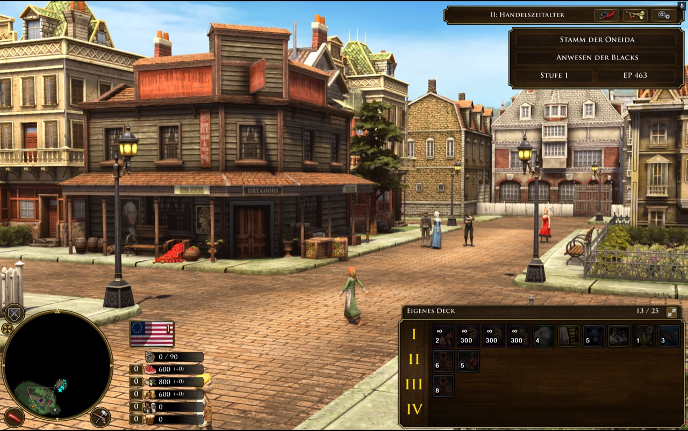
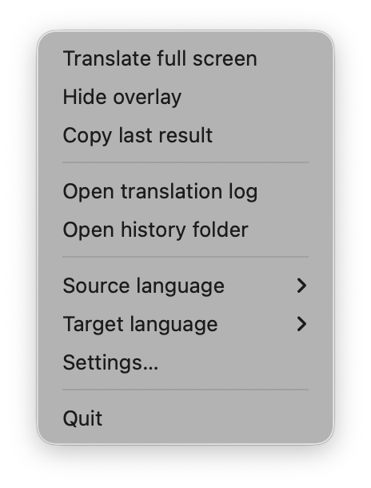
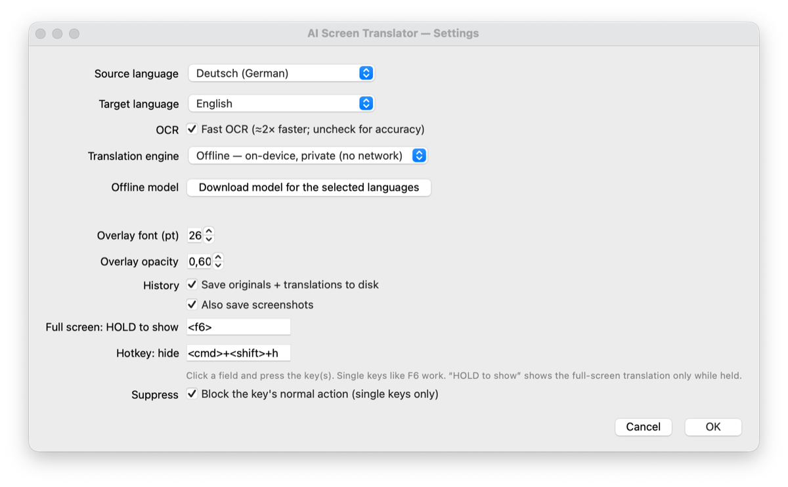

Hold F6 — that's the whole interaction

Release the key and the overlay disappears. Nothing is pasted into the game, nothing is modified — the translation is drawn on top.
What it does
-
Hold-to-translate the whole screen
It reads every block of text on screen and draws the translation in a box over the original. Release to go back.
-
Offline and private by default
Translation runs on-device via Argos Translate, so nothing leaves your machine. A free Google online mode is there if you want it.
-
25 languages
Japanese, Chinese, Korean, Russian, German, French and more — picked as a source/target pair from the tray menu.
-
Works over fullscreen games
Including GeForce Now and other cloud gaming, where copying text out simply isn't an option.
-
Every translation is saved
A local, searchable log of every original/translation pair, readable long after you've closed the game.
How to use it
-
Pick your languages
Open the menu-bar 文 icon and choose a Source and Target language — or open Settings… for the full list.
-
Hold the hotkey
Hold F6 and the screen is translated in place while you hold it. Cmd+Shift+H hides the overlay. Both hotkeys are reassignable.
-
Read the log later
Translator → Open translation log opens a browsable, copyable page of every pair — it still works with the app closed.


Running it
There's no installer yet — you clone the repository and launch it with the script for your platform.
macOS
Double-click run.command, or run ./run.sh.
Grant Screen Recording and Accessibility in System Settings → Privacy & Security when prompted, then relaunch. This is the most-tested platform.
Windows
Double-click run.bat.
Python is installed for you via winget if it's missing.
Linux (X11)
Run ./run.sh.
On Debian/Ubuntu you may also need libxcb-xinerama0 and libxcb-cursor0.
The first run sets everything up on its own — a one-time download of about 1 GB for the offline engine and language pack. Later launches start in seconds. Needs Python 3.9 or newer.
Privacy
By default nothing leaves your machine — translation happens on-device. The optional Google engine sends on-screen text to Google over the internet, and asks you to confirm before you switch to it. History, both text and screenshots, is stored locally and owner-only.